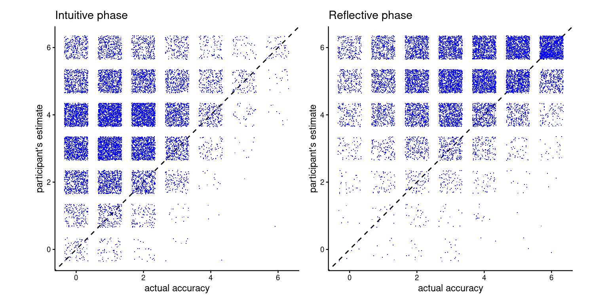
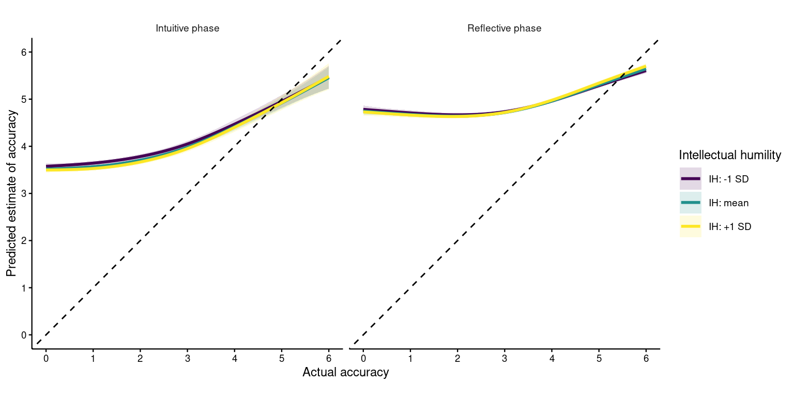
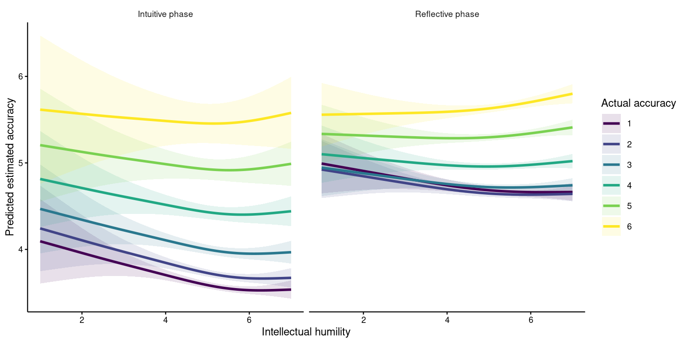
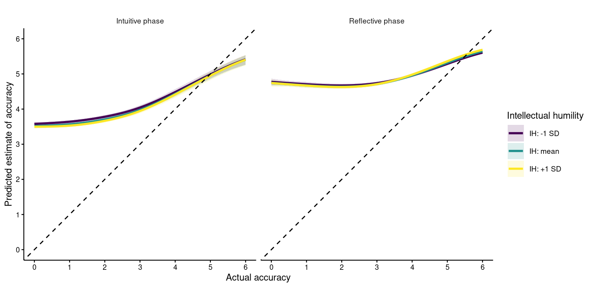
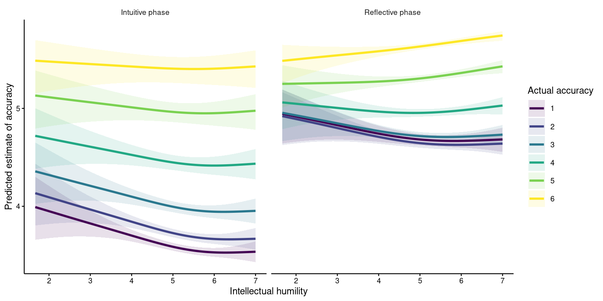

| Exclusion Criterion | Number Excluded | Fraction Excluded | Percentage Excluded |
|---|---|---|---|
| Finished == 1 | 6528 | 0.2710176 | 27.101756 |
| Q_RecaptchaScore >= 0.5 | 937 | 0.0389007 | 3.890065 |
| attention check == 0 | 551 | 0.0228754 | 2.287541 |
| Country_Res_YN == Yes | 789 | 0.0327563 | 3.275626 |
| Total | 8016 | 0.3327936 | 33.279362 |
JTF003-EC Results
1 Results
1.1 Data Processing and Exclusions
Exclusion criteria applied as stated in the preregistration:
We will exclude participants who did not complete the study, failed an attention check question, failed to pass the Captcha test (i.e., their Captcha score is equal to or lower than 0.5), or are not permanent residents of the geopolitical region where data collection is taking place.
| Demographic | Value |
|---|---|
| Avearge age (Std.) | 26.27 (10.79) |
| Age Range | 18 to 99 |
| N. males | 4685 |
| N. female | 10209 |
| N. non binary | 141 |
| N. prefer not to respond | 152 |
| N. prefer to self-describe | 58 |
| Demographic | Individualistic | Collectivistic |
|---|---|---|
| N participants | 10525 | 4720 |
| Average age (SD) | 26.91 (11.48) | 24.86 (8.89) |
| Age range | 18 to 99 | 18 to 97 |
| N males | 3101 | 1584 |
| N females | 7181 | 3028 |
| N non-binary | 119 | 22 |
| N prefer not to respond | 89 | 63 |
| N prefer to self-describe | 35 | 23 |
| Education level | Collectivistic, N (%) | Individualistic, N (%) |
|---|---|---|
| Less than a high school or secondary school degree (or equivalent) | 34 (0.7%) | 119 (1.1%) |
| High school or secondary school degree (or equivalent) | 2,207 (46.8%) | 6,447 (61.3%) |
| Bachelor’s degree (or equivalent) | 1,833 (38.8%) | 2,531 (24.0%) |
| Postgraduate degree (MA, PhD, JD, etc.) | 552 (11.7%) | 1,330 (12.6%) |
| Prefer not to respond | 94 (2.0%) | 98 (0.9%) |
1.1.1 Use of external resources
| problem | Baseline | Feedback | Justification | Feedback + justification |
|---|---|---|---|---|
| Problem 1 | 6.64% (N = 258) | 6.82% (N = 265) | 7.70% (N = 286) | 7.07% (N = 266) |
| Problem 2 | 6.95% (N = 270) | 6.41% (N = 249) | 8.24% (N = 306) | 6.73% (N = 253) |
| Problem 3 | 10.24% (N = 398) | 9.60% (N = 373) | 11.69% (N = 434) | 11.30% (N = 425) |
| Problem 4 | 8.98% (N = 349) | 8.70% (N = 338) | 11.23% (N = 417) | 10.37% (N = 390) |
| Problem 5 | 9.57% (N = 372) | 9.91% (N = 385) | 11.40% (N = 423) | 11.75% (N = 442) |
| Problem 6 | 10.86% (N = 422) | 9.27% (N = 360) | 12.93% (N = 480) | 12.58% (N = 473) |
1.1.2 Familiarity
| problem | Baseline | Feedback | Justification | Feedback + justification |
|---|---|---|---|---|
| Problem 1 | 50.19% (N = 1951) | 52.72% (N = 2048) | 52.24% (N = 1939) | 55.04% (N = 2070) |
| Problem 2 | 45.02% (N = 1750) | 46.51% (N = 1807) | 45.37% (N = 1684) | 46.82% (N = 1761) |
| Problem 3 | 16.03% (N = 623) | 14.47% (N = 562) | 16.92% (N = 628) | 16.35% (N = 615) |
| Problem 4 | 31.31% (N = 1217) | 31.02% (N = 1205) | 31.84% (N = 1182) | 31.67% (N = 1191) |
| Problem 5 | 26.19% (N = 1018) | 25.41% (N = 987) | 27.45% (N = 1019) | 27.12% (N = 1020) |
| Problem 6 | 23.10% (N = 898) | 24.20% (N = 940) | 24.52% (N = 910) | 24.75% (N = 931) |
1.1.3 Language background
| Language background of participants | ||
|---|---|---|
| Response | N | % |
| Fluency among non-native speakers | ||
| Prefer not to respond | 21 | 1.0 |
| Beginner | 44 | 2.1 |
| Intermediate | 397 | 19.2 |
| Advanced | 911 | 44.2 |
| Expert/Proficient | 690 | 33.4 |
| Native speaker of the study language | ||
| Yes | 12888 | 85.5 |
| No | 2064 | 13.7 |
| Prefer not to respond | 120 | 0.8 |
| Fluency was assessed only among participants who reported that the study language was not their native language. | ||
1.2 Confirmatory Analyses
| justification | feedback | problem | intuitive | reflective |
|---|---|---|---|---|
| J | F | 1 | 0.20 | 0.75 |
| J | F | 2 | 0.43 | 0.85 |
| J | F | 3 | 0.10 | 0.53 |
| J | F | 4 | 0.23 | 0.76 |
| J | F | 5 | 0.08 | 0.47 |
| J | F | 6 | 0.22 | 0.62 |
| J | NF | 1 | 0.19 | 0.49 |
| J | NF | 2 | 0.42 | 0.74 |
| J | NF | 3 | 0.10 | 0.49 |
| J | NF | 4 | 0.25 | 0.57 |
| J | NF | 5 | 0.09 | 0.35 |
| J | NF | 6 | 0.22 | 0.48 |
| NJ | F | 1 | 0.21 | 0.75 |
| NJ | F | 2 | 0.40 | 0.81 |
| NJ | F | 3 | 0.11 | 0.38 |
| NJ | F | 4 | 0.27 | 0.71 |
| NJ | F | 5 | 0.09 | 0.35 |
| NJ | F | 6 | 0.24 | 0.54 |
| NJ | NF | 1 | 0.18 | 0.44 |
| NJ | NF | 2 | 0.41 | 0.67 |
| NJ | NF | 3 | 0.11 | 0.33 |
| NJ | NF | 4 | 0.25 | 0.50 |
| NJ | NF | 5 | 0.10 | 0.29 |
| NJ | NF | 6 | 0.23 | 0.39 |

1.2.1 Models for H1a and H1b(Correction during deliberation)
| Predictor | Estimate | SE | 95% CI | p-value |
|---|---|---|---|---|
| (Intercept) | 0.146 | 0.071 | [0.007, 0.285] | .039 |
| feedback | 0.334 | 0.043 | [0.249, 0.418] | < .001 |
| justification | 0.258 | 0.040 | [0.180, 0.336] | < .001 |
| feedback:justification | -0.039 | 0.055 | [-0.147, 0.068] | .470 |
| SD (Country: (Intercept)) | 0.451 | |||
| SD (Country: feedback) | 0.083 | |||
| SD (Country: justification) | 0.000 | |||
| SD (Country: feedback:justification) | 0.000 | |||
| N | 24223 | |||
| N Country | 53 |
| Predictor | Estimate | SE | 95% CI | p-value |
|---|---|---|---|---|
| (Intercept) | 0.348 | 0.056 | [0.239, 0.458] | < .001 |
| feedback | 0.328 | 0.050 | [0.230, 0.426] | < .001 |
| justification | 0.249 | 0.046 | [0.159, 0.339] | < .001 |
| feedback:justification | -0.003 | 0.063 | [-0.126, 0.121] | .968 |
| SD (Country: (Intercept)) | 0.235 | |||
| SD (Country: feedback) | 0.081 | |||
| SD (Country: justification) | 0.000 | |||
| SD (Country: feedback:justification) | 0.000 | |||
| N | 18276 | |||
| N Country | 31 |
| Predictor | Estimate | SE | 95% CI | p-value |
|---|---|---|---|---|
| (Intercept) | -0.160 | 0.133 | [-0.421, 0.101] | .229 |
| feedback | 0.358 | 0.077 | [0.207, 0.508] | < .001 |
| justification | 0.280 | 0.080 | [0.124, 0.435] | < .001 |
| feedback:justification | -0.142 | 0.108 | [-0.354, 0.070] | .190 |
| SD (Country: (Intercept)) | 0.542 | |||
| SD (Country: feedback) | 0.000 | |||
| SD (Country: justification) | 0.000 | |||
| SD (Country: feedback:justification) | 0.000 | |||
| N | 5947 | |||
| N Country | 22 |
1.2.2 Models for H2 and H3 (Effects of accuracy and justification)
| Predictor | Estimate | SE | 95% CI | p-value |
|---|---|---|---|---|
| (Intercept) | -0.563 | 0.070 | [-0.699, -0.427] | < .001 |
| feedback | 0.594 | 0.028 | [0.540, 0.649] | < .001 |
| justification | 0.387 | 0.035 | [0.318, 0.456] | < .001 |
| feedback:justification | -0.041 | 0.047 | [-0.134, 0.051] | .382 |
| SD (Country: (Intercept)) | 0.476 | |||
| SD (Country: feedback) | 0.040 | |||
| SD (Country: justification) | 0.128 | |||
| SD (Country: feedback:justification) | 0.158 | |||
| N | 48038 | |||
| N Country | 53 |
| Predictor | Estimate | SE | 95% CI | p-value |
|---|---|---|---|---|
| (Intercept) | -0.376 | 0.068 | [-0.509, -0.243] | < .001 |
| feedback | 0.597 | 0.031 | [0.536, 0.658] | < .001 |
| justification | 0.407 | 0.040 | [0.329, 0.485] | < .001 |
| feedback:justification | 0.012 | 0.047 | [-0.080, 0.104] | .791 |
| SD (Country: (Intercept)) | 0.349 | |||
| SD (Country: feedback) | 0.000 | |||
| SD (Country: justification) | 0.107 | |||
| SD (Country: feedback:justification) | 0.054 | |||
| N | 33989 | |||
| N Country | 31 |
| Predictor | Estimate | SE | 95% CI | p-value |
|---|---|---|---|---|
| (Intercept) | -0.835 | 0.115 | [-1.059, -0.610] | < .001 |
| feedback | 0.600 | 0.057 | [0.488, 0.712] | < .001 |
| justification | 0.363 | 0.068 | [0.230, 0.495] | < .001 |
| feedback:justification | -0.161 | 0.094 | [-0.345, 0.023] | .086 |
| SD (Country: (Intercept)) | 0.487 | |||
| SD (Country: feedback) | 0.063 | |||
| SD (Country: justification) | 0.156 | |||
| SD (Country: feedback:justification) | 0.217 | |||
| N | 14049 | |||
| N Country | 22 |
1.2.3 Confirmatory hypothesis testing summary
| Hypothesis | Prediction | Supported | p-value(s) |
|---|---|---|---|
| H1a | Less than half of correct answers will arise from error correction during deliberation | No | .981 |
| H1b | Baseline performance is below 50% in both cultural groups | No | Individualistic = 1.000; Collectivistic = .115 |
| H2a | Feedback increases correction overall | Yes | < .001 |
| H2b | Feedback increases correction in both cultural groups | Yes | Individualistic = < .001; Collectivistic = < .001 |
| H3a | Justification increases correction overall | Yes | < .001 |
| H3b | Justification increases correction in both cultural groups | Yes | Individualistic = < .001; Collectivistic = < .001 |
1.3 Robustness Checks
1.3.1 Random Effects for CRT Problem
| Predictor | Estimate | SE | 95% CI | p-value |
|---|---|---|---|---|
| (Intercept) | 0.238 | 0.203 | [-0.160, 0.637] | .242 |
| feedback | 0.340 | 0.045 | [0.252, 0.428] | < .001 |
| justification | 0.250 | 0.041 | [0.170, 0.330] | < .001 |
| feedback:justification | -0.049 | 0.057 | [-0.161, 0.063] | .393 |
| SD (Country: (Intercept)) | 0.471 | |||
| SD (Country: feedback) | 0.103 | |||
| SD (Country: justification) | 0.000 | |||
| SD (Country: feedback:justification) | 0.059 | |||
| SD (problem: (Intercept)) | 0.465 | |||
| N | 24223 | |||
| N Country | 53 | |||
| N problem | 6 |
| Predictor | Estimate | SE | 95% CI | p-value |
|---|---|---|---|---|
| (Intercept) | 0.462 | 0.213 | [0.045, 0.880] | .030 |
| feedback | 0.325 | 0.054 | [0.220, 0.430] | < .001 |
| justification | 0.237 | 0.047 | [0.144, 0.329] | < .001 |
| feedback:justification | -0.008 | 0.067 | [-0.139, 0.123] | .904 |
| SD (Country: (Intercept)) | 0.259 | |||
| SD (Country: feedback) | 0.112 | |||
| SD (Country: justification) | 0.000 | |||
| SD (Country: feedback:justification) | 0.061 | |||
| SD (problem: (Intercept)) | 0.501 | |||
| N | 18276 | |||
| N Country | 31 | |||
| N problem | 6 |
| Predictor | Estimate | SE | 95% CI | p-value |
|---|---|---|---|---|
| (Intercept) | -0.105 | 0.207 | [-0.511, 0.301] | .611 |
| feedback | 0.370 | 0.082 | [0.209, 0.531] | < .001 |
| justification | 0.282 | 0.081 | [0.122, 0.441] | < .001 |
| feedback:justification | -0.153 | 0.111 | [-0.369, 0.064] | .167 |
| SD (Country: (Intercept)) | 0.562 | |||
| SD (Country: feedback) | 0.082 | |||
| SD (Country: justification) | 0.000 | |||
| SD (Country: feedback:justification) | 0.000 | |||
| SD (problem: (Intercept)) | 0.378 | |||
| N | 5947 | |||
| N Country | 22 | |||
| N problem | 6 |
| Predictor | Estimate | SE | 95% CI | p-value |
|---|---|---|---|---|
| (Intercept) | -0.539 | 0.221 | [-0.972, -0.105] | .015 |
| feedback | 0.635 | 0.030 | [0.576, 0.693] | < .001 |
| justification | 0.415 | 0.037 | [0.342, 0.489] | < .001 |
| feedback:justification | -0.050 | 0.050 | [-0.147, 0.048] | .317 |
| SD (Country: (Intercept)) | 0.511 | |||
| SD (Country: feedback) | 0.058 | |||
| SD (Country: justification) | 0.145 | |||
| SD (Country: feedback:justification) | 0.175 | |||
| SD (problem: (Intercept)) | 0.519 | |||
| N | 48038 | |||
| N Country | 53 | |||
| N problem | 6 |
| Predictor | Estimate | SE | 95% CI | p-value |
|---|---|---|---|---|
| (Intercept) | -0.340 | 0.237 | [-0.804, 0.123] | .150 |
| feedback | 0.643 | 0.032 | [0.580, 0.706] | < .001 |
| justification | 0.440 | 0.042 | [0.357, 0.523] | < .001 |
| feedback:justification | 0.006 | 0.049 | [-0.090, 0.101] | .910 |
| SD (Country: (Intercept)) | 0.387 | |||
| SD (Country: feedback) | 0.000 | |||
| SD (Country: justification) | 0.122 | |||
| SD (Country: feedback:justification) | 0.058 | |||
| SD (problem: (Intercept)) | 0.553 | |||
| N | 33989 | |||
| N Country | 31 | |||
| N problem | 6 |
| Predictor | Estimate | SE | 95% CI | p-value |
|---|---|---|---|---|
| (Intercept) | -0.816 | 0.235 | [-1.277, -0.355] | < .001 |
| feedback | 0.637 | 0.060 | [0.520, 0.754] | < .001 |
| justification | 0.385 | 0.071 | [0.246, 0.525] | < .001 |
| feedback:justification | -0.168 | 0.097 | [-0.359, 0.023] | .085 |
| SD (Country: (Intercept)) | 0.518 | |||
| SD (Country: feedback) | 0.077 | |||
| SD (Country: justification) | 0.170 | |||
| SD (Country: feedback:justification) | 0.231 | |||
| SD (problem: (Intercept)) | 0.494 | |||
| N | 14049 | |||
| N Country | 22 | |||
| N problem | 6 |
1.3.1.1 Hypothesis testing summary
| Hypothesis | Prediction | Supported | p-value(s) |
|---|---|---|---|
| H1a | Less than half of correct answers will arise from error correction during deliberation | No | .879 |
| H1b | Baseline performance is below 50% in both cultural groups | No | Individualistic = .985; Collectivistic = .306 |
| H2a | Feedback increases correction overall | Yes | < .001 |
| H2b | Feedback increases correction in both cultural groups | Yes | Individualistic = < .001; Collectivistic = < .001 |
| H3a | Justification increases correction overall | Yes | < .001 |
| H3b | Justification increases correction in both cultural groups | Yes | Individualistic = < .001; Collectivistic = < .001 |
1.3.2 Random Effects for Participating Site
| Predictor | Estimate | SE | 95% CI | p-value |
|---|---|---|---|---|
| (Intercept) | 0.170 | 0.069 | [0.034, 0.305] | .014 |
| feedback | 0.333 | 0.044 | [0.247, 0.419] | < .001 |
| justification | 0.255 | 0.040 | [0.176, 0.334] | < .001 |
| feedback:justification | -0.030 | 0.055 | [-0.139, 0.078] | .585 |
| SD (LabID: (Intercept)) | 0.308 | |||
| SD (Country: feedback:justification) | 0.000 | |||
| SD (Country: justification) | 0.000 | |||
| SD (Country: feedback) | 0.096 | |||
| SD (Country: (Intercept)) | 0.350 | |||
| N | 23957 | |||
| N LabID | 135 | |||
| N Country | 52 |
| Predictor | Estimate | SE | 95% CI | p-value |
|---|---|---|---|---|
| (Intercept) | 0.344 | 0.052 | [0.243, 0.445] | < .001 |
| feedback | 0.328 | 0.051 | [0.228, 0.428] | < .001 |
| justification | 0.244 | 0.047 | [0.153, 0.335] | < .001 |
| feedback:justification | 0.015 | 0.064 | [-0.111, 0.141] | .811 |
| SD (LabID: (Intercept)) | 0.315 | |||
| SD (Country: feedback:justification) | 0.000 | |||
| SD (Country: justification) | 0.000 | |||
| SD (Country: feedback) | 0.098 | |||
| SD (Country: (Intercept)) | 0.074 | |||
| N | 18017 | |||
| N LabID | 93 | |||
| N Country | 30 |
| Predictor | Estimate | SE | 95% CI | p-value |
|---|---|---|---|---|
| (Intercept) | -0.150 | 0.136 | [-0.417, 0.117] | .270 |
| feedback | 0.357 | 0.077 | [0.206, 0.509] | < .001 |
| justification | 0.281 | 0.080 | [0.124, 0.437] | < .001 |
| feedback:justification | -0.150 | 0.109 | [-0.363, 0.063] | .168 |
| SD (LabID: (Intercept)) | 0.221 | |||
| SD (Country: feedback:justification) | 0.000 | |||
| SD (Country: justification) | 0.000 | |||
| SD (Country: feedback) | 0.000 | |||
| SD (Country: (Intercept)) | 0.515 | |||
| N | 5940 | |||
| N LabID | 43 | |||
| N Country | 22 |
| Predictor | Estimate | SE | 95% CI | p-value |
|---|---|---|---|---|
| (Intercept) | -0.535 | 0.065 | [-0.663, -0.407] | < .001 |
| feedback | 0.601 | 0.027 | [0.548, 0.653] | < .001 |
| justification | 0.393 | 0.035 | [0.324, 0.462] | < .001 |
| feedback:justification | -0.036 | 0.047 | [-0.129, 0.056] | .441 |
| SD (LabID: (Intercept)) | 0.374 | |||
| SD (Country: feedback:justification) | 0.155 | |||
| SD (Country: justification) | 0.124 | |||
| SD (Country: feedback) | 0.008 | |||
| SD (Country: (Intercept)) | 0.323 | |||
| N | 47632 | |||
| N LabID | 137 | |||
| N Country | 52 |
| Predictor | Estimate | SE | 95% CI | p-value |
|---|---|---|---|---|
| (Intercept) | -0.379 | 0.069 | [-0.515, -0.244] | < .001 |
| feedback | 0.602 | 0.032 | [0.540, 0.664] | < .001 |
| justification | 0.414 | 0.039 | [0.337, 0.491] | < .001 |
| feedback:justification | 0.022 | 0.047 | [-0.070, 0.115] | .632 |
| SD (LabID: (Intercept)) | 0.320 | |||
| SD (Country: feedback:justification) | 0.041 | |||
| SD (Country: justification) | 0.098 | |||
| SD (Country: feedback) | 0.000 | |||
| SD (Country: (Intercept)) | 0.268 | |||
| N | 33604 | |||
| N LabID | 95 | |||
| N Country | 30 |
| Predictor | Estimate | SE | 95% CI | p-value |
|---|---|---|---|---|
| (Intercept) | -0.774 | 0.111 | [-0.991, -0.557] | < .001 |
| feedback | 0.597 | 0.050 | [0.499, 0.695] | < .001 |
| justification | 0.364 | 0.066 | [0.235, 0.494] | < .001 |
| feedback:justification | -0.161 | 0.091 | [-0.340, 0.018] | .078 |
| SD (LabID: (Intercept)) | 0.483 | |||
| SD (Country: feedback:justification) | 0.213 | |||
| SD (Country: justification) | 0.148 | |||
| SD (Country: feedback) | 0.000 | |||
| SD (Country: (Intercept)) | 0.225 | |||
| N | 14028 | |||
| N LabID | 43 | |||
| N Country | 22 |
1.3.2.1 Hypothesis testing summary
| Hypothesis | Prediction | Supported | p-value(s) |
|---|---|---|---|
| H1a | Less than half of correct answers will arise from error correction during deliberation | No | .993 |
| H1b | Baseline performance is below 50% in both cultural groups | No | Individualistic = 1.000; Collectivistic = .135 |
| H2a | Feedback increases correction overall | Yes | < .001 |
| H2b | Feedback increases correction in both cultural groups | Yes | Individualistic = < .001; Collectivistic = < .001 |
| H3a | Justification increases correction overall | Yes | < .001 |
| H3b | Justification increases correction in both cultural groups | Yes | Individualistic = < .001; Collectivistic = < .001 |
1.4 Exploratory Analyses
1.4.1 Scales reliability and measurement invariance
Note: for these analyses I have included only countries with N \(\ge\) 100.
1.4.1.1 Intellectual humility
| Country | N | alpha |
|---|---|---|
| United States | 1672 | 0.64 |
| Turkey | 1468 | 0.65 |
| Spain | 1446 | 0.64 |
| Italy | 896 | 0.57 |
| United Kingdom | 842 | 0.67 |
| Poland | 452 | 0.62 |
| Philippines | 414 | 0.68 |
| Australia | 410 | 0.66 |
| Germany | 373 | 0.65 |
| Colombia | 372 | 0.67 |
| Malaysia | 349 | 0.62 |
| Bulgaria | 348 | 0.64 |
| Austria | 287 | 0.62 |
| Canada | 278 | 0.64 |
| Netherlands | 276 | 0.67 |
| Greece | 273 | 0.71 |
| India | 268 | 0.71 |
| Pakistan | 257 | 0.64 |
| Slovakia | 236 | 0.69 |
| Hungary | 226 | 0.64 |
| Serbia | 220 | 0.66 |
| Portugal | 219 | 0.67 |
| Russia | 201 | 0.69 |
| Chile | 197 | 0.78 |
| North Macedonia | 186 | 0.62 |
| Egypt | 183 | 0.52 |
| Singapore | 176 | 0.73 |
| Kuwait | 168 | 0.71 |
| France | 166 | 0.56 |
| Czech Republic | 158 | 0.67 |
| Sierra Leone | 146 | 0.71 |
| Nigeria | 144 | 0.67 |
| Kenya | 143 | 0.74 |
| China | 136 | 0.57 |
| South Africa | 133 | 0.72 |
| Indonesia | 123 | 0.64 |
| Mexico | 122 | 0.68 |
| Ghana | 110 | 0.83 |
| Ethiopia | 109 | 0.63 |
| Cameroon | 108 | 0.84 |
| New Zealand | 104 | 0.71 |
| Model | CFI | TLI | RMSEA | SRMR | ΔCFI | ΔRMSEA |
|---|---|---|---|---|---|---|
| Configural | 0.973 | 0.943 | 0.050 | 0.029 | NA | NA |
| Metric | 0.956 | 0.930 | 0.056 | 0.046 | -0.017 | 0.005 |
| Scalar | 0.924 | 0.905 | 0.065 | 0.062 | -0.032 | 0.009 |
As an exploratory test of cross-country measurement invariance, we fitted multi-group CFAs in which the nine items loaded on a substantive intellectual-humility (IH) factor while separate positive- and negative-wording method factors captured the method effects identified in the original scale validation. The IH factor was specified as independent of the wording factors, while the two method factors were allowed to covary. The configural model showed good fit (CFI = .973, RMSEA = .050, SRMR = .029). We then constrained only the substantive IH loadings to equality across countries, leaving wording-factor loadings free; this produced a modest deterioration in fit (ΔCFI = −.017, ΔRMSEA = .005, ΔSRMR = .017). Adding equality constraints on item intercepts produced a larger deterioration (ΔCFI = −.032, ΔRMSEA = .009, ΔSRMR = .016). Thus, using the conventional ΔCFI ≤ .01 criterion, strict metric and scalar invariance were not supported, although departures from metric invariance were relatively modest. These results suggest that the scale captures a broadly similar construct across countries, but some caution is warranted.
1.4.1.2 Actively open-minded thinking scale
| Model | CFI | TLI | RMSEA | SRMR | ΔCFI | ΔRMSEA | ΔSRMR |
|---|---|---|---|---|---|---|---|
| Configural | 0.923 | 0.894 | 0.051 | 0.044 | NA | NA | NA |
| Metric | 0.889 | 0.872 | 0.056 | 0.067 | -0.034 | 0.005 | 0.023 |
| Scalar | 0.750 | 0.752 | 0.079 | 0.091 | -0.139 | 0.022 | 0.024 |
The AOT scale showed mixed evidence of configural fit (CFI = .923, RMSEA = .051, SRMR = .044). When equality constraints were imposed only on the substantive AOT loadings, while allowing loadings on the negative-wording method factor to vary across countries, model fit deteriorated moderately (ΔCFI = −.034, ΔRMSEA = .005, ΔSRMR = .023), indicating departures from full metric invariance. Imposing equality constraints on item intercepts produced a much larger deterioration in fit (ΔCFI = −.139, ΔRMSEA = .022, ΔSRMR = .024), providing clear evidence against scalar invariance.
1.4.1.3 Individualistic and collectivistic cultural tendencies scale
The original 1998 paper only reported that an EFA-supported four-factor structure, followed by convergent/discriminant validity analyses; they did not do an extensive four-factor CFA structure validation of the 16-items scale.
NOTE: post-fitting diagnostic check (
lavInspect(fit, "post.check")) was failing for these model, in particular Egypt, Kuwait and Ghana (with N ranging from 110 to 183) had negative eigenvalues, indicating non-positive defined covariance matrices. Therefore I have increased the threshold for being included in the analysis from 100 to 200 responses (considering also that this is a more complex 4 factor model).
| Model | CFI | TLI | RMSEA | SRMR | ΔCFI | ΔRMSEA | ΔSRMR |
|---|---|---|---|---|---|---|---|
| Configural | 0.833 | 0.796 | 0.075 | 0.074 | NA | NA | NA |
| Metric | 0.816 | 0.798 | 0.075 | 0.081 | -0.018 | 0.000 | 0.007 |
| Scalar | 0.625 | 0.627 | 0.102 | 0.104 | -0.191 | 0.027 | 0.023 |
For the Individualism–Collectivism scale, measurement invariance was examined using the proposed four-factor structure (horizontal individualism, vertical individualism, horizontal collectivism, and vertical collectivism). Because models including smaller country samples produced inadmissible solutions, analyses were restricted to countries with at least 200 participants. The configural model showed mixed absolute fit (CFI = .833, RMSEA = .075, SRMR = .074), providing only moderate support for the four-factor structure across countries. Constraining factor loadings to equality resulted in a relatively small deterioration in fit (ΔCFI = −.018, ΔRMSEA = .000, ΔSRMR = .007); thus, strict metric invariance was not supported according to the conventional ΔCFI ≤ .01 criterion, although the results were broadly consistent with approximate metric comparability. In contrast, imposing equality constraints on item intercepts produced a substantial deterioration in fit (ΔCFI = −.191, ΔRMSEA = .027, ΔSRMR = .023), providing clear evidence against scalar invariance. Accordingly, associations involving the four dimensions may be reasonably comparable across countries, but cross-country comparisons of their observed mean levels should be interpreted with considerable caution.
1.4.2 Individual Differences and Corrective Behaviour (pre-registered analyses)
| IH_score | AOT_score | IC_HI | IC_VI | IC_HC | IC_VC | |
|---|---|---|---|---|---|---|
| IH_score | 1.00 | 0.36 | 0.09 | -0.23 | 0.37 | 0.10 |
| AOT_score | 0.36 | 1.00 | 0.00 | -0.28 | 0.11 | -0.20 |
| IC_HI | 0.09 | 0.00 | 1.00 | 0.28 | 0.05 | 0.15 |
| IC_VI | -0.23 | -0.28 | 0.28 | 1.00 | -0.08 | 0.29 |
| IC_HC | 0.37 | 0.11 | 0.05 | -0.08 | 1.00 | 0.35 |
| IC_VC | 0.10 | -0.20 | 0.15 | 0.29 | 0.35 | 1.00 |
| Predictor | Estimate | SE | 95% CI | p-value |
|---|---|---|---|---|
| (Intercept) | 0.262 | 0.201 | [-0.133, 0.656] | .193 |
| feedback | 0.345 | 0.046 | [0.255, 0.436] | < .001 |
| justification | 0.252 | 0.041 | [0.172, 0.332] | < .001 |
| IH_score | 0.046 | 0.036 | [-0.024, 0.116] | .195 |
| AOT_score | 0.154 | 0.033 | [0.089, 0.219] | < .001 |
| IC_HI | -0.004 | 0.032 | [-0.066, 0.058] | .897 |
| IC_VI | -0.050 | 0.034 | [-0.117, 0.018] | .148 |
| IC_HC | -0.085 | 0.035 | [-0.154, -0.015] | .017 |
| IC_VC | -0.029 | 0.035 | [-0.098, 0.040] | .408 |
| feedback:justification | -0.054 | 0.057 | [-0.166, 0.059] | .349 |
| feedback:IH_score | 0.000 | 0.048 | [-0.093, 0.094] | .993 |
| feedback:AOT_score | -0.043 | 0.045 | [-0.130, 0.045] | .338 |
| feedback:IC_HI | 0.025 | 0.043 | [-0.058, 0.109] | .556 |
| feedback:IC_VI | -0.001 | 0.046 | [-0.091, 0.090] | .990 |
| feedback:IC_HC | 0.013 | 0.047 | [-0.079, 0.106] | .775 |
| feedback:IC_VC | 0.050 | 0.047 | [-0.042, 0.142] | .291 |
| justification:IH_score | -0.008 | 0.048 | [-0.102, 0.087] | .874 |
| justification:AOT_score | -0.079 | 0.046 | [-0.168, 0.010] | .084 |
| justification:IC_HI | 0.027 | 0.044 | [-0.058, 0.112] | .536 |
| justification:IC_VI | -0.006 | 0.047 | [-0.098, 0.086] | .903 |
| justification:IC_HC | 0.043 | 0.048 | [-0.050, 0.137] | .365 |
| justification:IC_VC | 0.000 | 0.047 | [-0.093, 0.093] | .997 |
| feedback:justification:IH_score | 0.001 | 0.066 | [-0.129, 0.132] | .985 |
| feedback:justification:AOT_score | 0.051 | 0.063 | [-0.072, 0.174] | .418 |
| feedback:justification:IC_HI | 0.026 | 0.060 | [-0.091, 0.143] | .664 |
| feedback:justification:IC_VI | -0.002 | 0.065 | [-0.129, 0.125] | .975 |
| feedback:justification:IC_HC | -0.009 | 0.065 | [-0.137, 0.120] | .895 |
| feedback:justification:IC_VC | -0.038 | 0.065 | [-0.165, 0.089] | .557 |
| SD (Country: (Intercept)) | 0.421 | |||
| SD (Country: feedback) | 0.114 | |||
| SD (Country: justification) | 0.000 | |||
| SD (Country: feedback:justification) | 0.057 | |||
| SD (problem: (Intercept)) | 0.464 | |||
| N | 24218 | |||
| N Country | 53 | |||
| N problem | 6 |
| Predictor | Estimate | SE | 95% CI | p-value |
|---|---|---|---|---|
| (Intercept) | -0.510 | 0.226 | [-0.953, -0.067] | .024 |
| feedback | 0.647 | 0.031 | [0.587, 0.707] | < .001 |
| justification | 0.420 | 0.038 | [0.346, 0.495] | < .001 |
| IH_score | -0.051 | 0.024 | [-0.098, -0.003] | .036 |
| AOT_score | 0.295 | 0.023 | [0.250, 0.341] | < .001 |
| IC_HI | -0.070 | 0.021 | [-0.112, -0.028] | .001 |
| IC_VI | 0.047 | 0.023 | [0.001, 0.092] | .044 |
| IC_HC | -0.087 | 0.024 | [-0.133, -0.040] | < .001 |
| IC_VC | -0.099 | 0.023 | [-0.144, -0.053] | < .001 |
| feedback:justification | -0.043 | 0.048 | [-0.137, 0.052] | .375 |
| feedback:IH_score | 0.049 | 0.033 | [-0.014, 0.113] | .129 |
| feedback:AOT_score | -0.074 | 0.031 | [-0.135, -0.013] | .017 |
| feedback:IC_HI | 0.029 | 0.029 | [-0.028, 0.086] | .326 |
| feedback:IC_VI | 0.013 | 0.032 | [-0.049, 0.075] | .673 |
| feedback:IC_HC | 0.061 | 0.032 | [-0.002, 0.124] | .056 |
| feedback:IC_VC | 0.066 | 0.032 | [0.004, 0.128] | .038 |
| justification:IH_score | -0.000 | 0.033 | [-0.066, 0.065] | .994 |
| justification:AOT_score | -0.019 | 0.032 | [-0.082, 0.043] | .550 |
| justification:IC_HI | 0.045 | 0.030 | [-0.014, 0.103] | .135 |
| justification:IC_VI | 0.030 | 0.032 | [-0.034, 0.093] | .355 |
| justification:IC_HC | 0.053 | 0.033 | [-0.012, 0.117] | .110 |
| justification:IC_VC | -0.015 | 0.032 | [-0.079, 0.048] | .631 |
| feedback:justification:IH_score | -0.020 | 0.047 | [-0.111, 0.071] | .669 |
| feedback:justification:AOT_score | 0.099 | 0.045 | [0.012, 0.187] | .026 |
| feedback:justification:IC_HI | -0.015 | 0.042 | [-0.096, 0.067] | .725 |
| feedback:justification:IC_VI | -0.040 | 0.045 | [-0.129, 0.048] | .372 |
| feedback:justification:IC_HC | -0.009 | 0.046 | [-0.099, 0.080] | .837 |
| feedback:justification:IC_VC | -0.051 | 0.045 | [-0.140, 0.037] | .257 |
| SD (Country: (Intercept)) | 0.439 | |||
| SD (Country: feedback) | 0.066 | |||
| SD (Country: justification) | 0.148 | |||
| SD (Country: feedback:justification) | 0.153 | |||
| SD (problem: (Intercept)) | 0.530 | |||
| N | 48036 | |||
| N Country | 53 | |||
| N problem | 6 |
1.4.3 Individual Differences and Corrective Behaviour (revised)
In this version all scales are centred within country, to mitigate issues of violation of scalar invariance and improve comparability across countries.
| Predictor | Estimate | SE | 95% CI | p-value |
|---|---|---|---|---|
| (Intercept) | 0.236 | 0.204 | [-0.163, 0.636] | .246 |
| feedback | 0.349 | 0.045 | [0.261, 0.437] | < .001 |
| justification | 0.251 | 0.041 | [0.171, 0.332] | < .001 |
| IH_score_wc | 0.045 | 0.035 | [-0.024, 0.115] | .200 |
| AOT_score_wc | 0.136 | 0.032 | [0.073, 0.199] | < .001 |
| IC_HI_wc | 0.003 | 0.031 | [-0.058, 0.065] | .920 |
| IC_VI_wc | -0.042 | 0.033 | [-0.107, 0.022] | .199 |
| IC_HC_wc | -0.084 | 0.035 | [-0.152, -0.015] | .017 |
| IC_VC_wc | -0.025 | 0.034 | [-0.092, 0.042] | .467 |
| feedback:justification | -0.053 | 0.057 | [-0.165, 0.059] | .351 |
| feedback:IH_score_wc | 0.004 | 0.048 | [-0.089, 0.097] | .932 |
| feedback:AOT_score_wc | -0.032 | 0.044 | [-0.118, 0.053] | .460 |
| feedback:IC_HI_wc | 0.015 | 0.042 | [-0.068, 0.098] | .724 |
| feedback:IC_VI_wc | -0.001 | 0.044 | [-0.088, 0.086] | .975 |
| feedback:IC_HC_wc | 0.016 | 0.046 | [-0.075, 0.107] | .732 |
| feedback:IC_VC_wc | 0.053 | 0.046 | [-0.036, 0.142] | .245 |
| justification:IH_score_wc | -0.008 | 0.048 | [-0.102, 0.087] | .876 |
| justification:AOT_score_wc | -0.074 | 0.045 | [-0.162, 0.014] | .099 |
| justification:IC_HI_wc | 0.012 | 0.043 | [-0.073, 0.097] | .776 |
| justification:IC_VI_wc | -0.000 | 0.046 | [-0.089, 0.089] | .999 |
| justification:IC_HC_wc | 0.046 | 0.048 | [-0.047, 0.139] | .333 |
| justification:IC_VC_wc | -0.009 | 0.046 | [-0.100, 0.081] | .841 |
| feedback:justification:IH_score_wc | 0.001 | 0.067 | [-0.129, 0.132] | .985 |
| feedback:justification:AOT_score_wc | 0.043 | 0.062 | [-0.077, 0.164] | .482 |
| feedback:justification:IC_HI_wc | 0.050 | 0.059 | [-0.066, 0.166] | .401 |
| feedback:justification:IC_VI_wc | -0.007 | 0.063 | [-0.130, 0.116] | .909 |
| feedback:justification:IC_HC_wc | -0.017 | 0.065 | [-0.145, 0.110] | .789 |
| feedback:justification:IC_VC_wc | -0.022 | 0.063 | [-0.146, 0.103] | .734 |
| SD (Country: (Intercept)) | 0.475 | |||
| SD (Country: feedback) | 0.094 | |||
| SD (Country: justification) | 0.000 | |||
| SD (Country: feedback:justification) | 0.052 | |||
| SD (problem: (Intercept)) | 0.464 | |||
| N | 24218 | |||
| N Country | 53 | |||
| N problem | 6 |
| Predictor | Estimate | SE | 95% CI | p-value |
|---|---|---|---|---|
| (Intercept) | -0.545 | 0.229 | [-0.995, -0.095] | .017 |
| feedback | 0.646 | 0.030 | [0.586, 0.705] | < .001 |
| justification | 0.415 | 0.038 | [0.341, 0.489] | < .001 |
| IH_score_wc | -0.055 | 0.024 | [-0.101, -0.008] | .022 |
| AOT_score_wc | 0.274 | 0.022 | [0.230, 0.317] | < .001 |
| IC_HI_wc | -0.065 | 0.021 | [-0.106, -0.024] | .002 |
| IC_VI_wc | 0.037 | 0.022 | [-0.006, 0.080] | .093 |
| IC_HC_wc | -0.079 | 0.023 | [-0.125, -0.033] | < .001 |
| IC_VC_wc | -0.088 | 0.023 | [-0.133, -0.044] | < .001 |
| feedback:justification | -0.047 | 0.049 | [-0.142, 0.049] | .338 |
| feedback:IH_score_wc | 0.055 | 0.032 | [-0.008, 0.119] | .089 |
| feedback:AOT_score_wc | -0.064 | 0.030 | [-0.124, -0.005] | .034 |
| feedback:IC_HI_wc | 0.023 | 0.029 | [-0.034, 0.079] | .430 |
| feedback:IC_VI_wc | 0.023 | 0.031 | [-0.037, 0.083] | .453 |
| feedback:IC_HC_wc | 0.056 | 0.032 | [-0.006, 0.118] | .078 |
| feedback:IC_VC_wc | 0.056 | 0.031 | [-0.005, 0.117] | .070 |
| justification:IH_score_wc | 0.010 | 0.033 | [-0.055, 0.075] | .765 |
| justification:AOT_score_wc | -0.013 | 0.031 | [-0.073, 0.048] | .679 |
| justification:IC_HI_wc | 0.043 | 0.029 | [-0.014, 0.101] | .141 |
| justification:IC_VI_wc | 0.038 | 0.031 | [-0.023, 0.099] | .223 |
| justification:IC_HC_wc | 0.043 | 0.032 | [-0.021, 0.106] | .188 |
| justification:IC_VC_wc | -0.020 | 0.031 | [-0.082, 0.041] | .518 |
| feedback:justification:IH_score_wc | -0.029 | 0.046 | [-0.120, 0.061] | .525 |
| feedback:justification:AOT_score_wc | 0.079 | 0.043 | [-0.006, 0.164] | .069 |
| feedback:justification:IC_HI_wc | -0.010 | 0.041 | [-0.090, 0.071] | .816 |
| feedback:justification:IC_VI_wc | -0.049 | 0.044 | [-0.135, 0.036] | .260 |
| feedback:justification:IC_HC_wc | -0.001 | 0.045 | [-0.089, 0.087] | .984 |
| feedback:justification:IC_VC_wc | -0.037 | 0.044 | [-0.124, 0.049] | .398 |
| SD (Country: (Intercept)) | 0.519 | |||
| SD (Country: feedback) | 0.061 | |||
| SD (Country: justification) | 0.146 | |||
| SD (Country: feedback:justification) | 0.160 | |||
| SD (problem: (Intercept)) | 0.531 | |||
| N | 48036 | |||
| N Country | 53 | |||
| N problem | 6 |
1.4.4 Community and Student Sample Differences
# to check
table(d$Sample)
234455 5 Chttp:// Community Student
1 4 2 4334 10669 sum(is.na(d$Sample))[1] 235# unique(d$Country[is.na(d$Sample)])
# unique(d$LabID[is.na(d$Sample)])
d %>%
filter(is.na(Sample)) %>%
group_by(Country, LabID) %>%
summarise(N = n())# A tibble: 11 × 3
# Groups: Country [9]
Country LabID N
<chr> <chr> <int>
1 Bangladesh <NA> 3
2 Colombia 3629 29
3 Germany Sample=S 1
4 Germany <NA> 1
5 Italy 3704… 1
6 Italy <NA> 39
7 Mexico 15 1
8 Netherlands 381 77
9 Norway <NA> 79
10 Serbia <NA> 3
11 Spain 3275 1| Predictor | Estimate | SE | 95% CI | p-value |
|---|---|---|---|---|
| (Intercept) | 0.137 | 0.209 | [-0.272, 0.547] | .511 |
| feedback | 0.336 | 0.071 | [0.197, 0.474] | < .001 |
| justification | 0.207 | 0.072 | [0.065, 0.349] | .004 |
| SampleStudent | 0.172 | 0.067 | [0.040, 0.304] | .011 |
| feedback:justification | -0.100 | 0.099 | [-0.295, 0.095] | .313 |
| feedback:SampleStudent | 0.024 | 0.087 | [-0.147, 0.195] | .784 |
| justification:SampleStudent | 0.066 | 0.088 | [-0.106, 0.238] | .452 |
| feedback:justification:SampleStudent | 0.094 | 0.121 | [-0.142, 0.330] | .436 |
| SD (Country: (Intercept)) | 0.471 | |||
| SD (Country: feedback) | 0.076 | |||
| SD (Country: justification) | 0.000 | |||
| SD (Country: feedback:justification) | 0.042 | |||
| SD (problem: (Intercept)) | 0.468 | |||
| N | 23760 | |||
| N Country | 52 | |||
| N problem | 6 |
| Predictor | Estimate | SE | 95% CI | p-value |
|---|---|---|---|---|
| (Intercept) | -0.573 | 0.226 | [-1.015, -0.131] | .011 |
| feedback | 0.703 | 0.053 | [0.600, 0.806] | < .001 |
| justification | 0.440 | 0.059 | [0.325, 0.556] | < .001 |
| SampleStudent | 0.041 | 0.049 | [-0.054, 0.136] | .400 |
| feedback:justification | -0.162 | 0.080 | [-0.318, -0.006] | .042 |
| feedback:SampleStudent | -0.091 | 0.062 | [-0.212, 0.030] | .142 |
| justification:SampleStudent | -0.033 | 0.067 | [-0.164, 0.098] | .622 |
| feedback:justification:SampleStudent | 0.155 | 0.092 | [-0.025, 0.336] | .092 |
| SD (Country: (Intercept)) | 0.513 | |||
| SD (Country: feedback) | 0.048 | |||
| SD (Country: justification) | 0.152 | |||
| SD (Country: feedback:justification) | 0.167 | |||
| SD (problem: (Intercept)) | 0.522 | |||
| N | 47290 | |||
| N Country | 52 | |||
| N problem | 6 |
1.4.5 Confidence Calibration and Intellectual Humility

| Model | Component | Term | Estimate | SE | edf | Ref. df | Statistic | p |
|---|---|---|---|---|---|---|---|---|
| Intuitive | Parametric | Intercept | 3.725 | 0.011 | 349.164 | < .001 | ||
| Intuitive | Smooth | Actual accuracy | 4.121 | 4.813 | 151.728 | < .001 | ||
| Intuitive | Smooth | Intellectual humility | 2.279 | 2.757 | 10.036 | < .001 | ||
| Intuitive | Smooth | Actual accuracy × intellectual humility | 1.894 | 2.388 | 0.866 | .510 | ||
| Reflective | Parametric | Intercept | 4.975 | 0.009 | 583.248 | < .001 | ||
| Reflective | Smooth | Actual accuracy | 4.804 | 5.518 | 298.650 | < .001 | ||
| Reflective | Smooth | Intellectual humility | 1.997 | 2.456 | 1.202 | .281 | ||
| Reflective | Smooth | Actual accuracy × intellectual humility | 1.622 | 2.019 | 4.232 | .014 |


1.4.5.1 Robustness analysis: quasibinomial GAMs
As a robustness analysis, we repeated the calibration analyses using quasibinomial GAMs. These models constrain predicted estimates to the possible 0–6 range while allowing for overdispersion relative to the binomial variance.
1.4.5.2 Model estimates
| Model | Component | Term | Estimate | SE | edf | Ref. df | Statistic | p |
|---|---|---|---|---|---|---|---|---|
| Intuitive | Parametric | Intercept | 0.502 | 0.008 | 65.621 | < .001 | ||
| Intuitive | Smooth | Actual accuracy | 4.420 | 5.032 | 135.304 | < .001 | ||
| Intuitive | Smooth | Intellectual humility | 2.187 | 2.661 | 10.229 | < .001 | ||
| Intuitive | Smooth | Actual accuracy × intellectual humility | 1.610 | 2.009 | 0.582 | .570 | ||
| Reflective | Parametric | Intercept | 1.662 | 0.011 | 150.685 | < .001 | ||
| Reflective | Smooth | Actual accuracy | 5.151 | 5.754 | 257.390 | < .001 | ||
| Reflective | Smooth | Intellectual humility | 2.011 | 2.473 | 2.162 | .093 | ||
| Reflective | Smooth | Actual accuracy × intellectual humility | 2.341 | 2.936 | 5.344 | .002 |
1.4.5.3 Predicted calibration curves

1.4.5.4 Intellectual humility interaction plots
